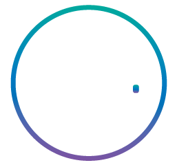

Home
Publicações
Eventos
Projetos
Curadoria
Publicações
LIVROS ORGANIZADOS | 2020
LIVROS ORGANIZADOS | 2017
ARTIGOS EM PERIÓDICOS | 2019
GASPARETTO, D. A. Projetando Interfaces para Homo Empathicus. PORTO ARTE: Revista de Artes Visuais, v. 24, p. 1-11, 2019.
ARTIGOS EM PERIÓDICOS | 2018
GASPARETTO, D. A.. Modos de conectar em redes instáveis. MODOS, v. 2, p. 73-90, 2018./
KRUPAHTZ, JULIANA ; GASPARETTO, DÉBORA AITA . REDESENHO DA INTERFACE DIGITAL DA REVISTA ARCO: O DESIGN CENTRADO NO USUÁRIO COM A UTILIZAÇÃO DO MÉTODO 5 I’S. Human Factors in Design, v. 7, p. 02-18, 2018.
ARTIGOS EM PERIÓDICOS | 2017
GASPARETTO, D. A; CAMBRUZZI, C. ; DELLAMEA, A. P. . Infodesign no VR Game Labchange. EXPRESSÃO (SANTA MARIA), v. 1, p. 41-51, 2017. (IMPRESSO)
ARTIGOS EM PERIÓDICOS | 2016
GASPARETTO, D. A.; PEDROZO, D. D. ; OLIVEIRA, F. . Design Conectado: por um mundo de experiências. Estudos em Design (Online), v. 24, p. 146-165, 2016.
ARTIGOS EM ANAIS DE EVENTOS | 2016
KRUPAHTZ, JULIANA ; GASPARETTO, DÉBORA AITA . DESIGN CENTRADO NO USUÁRIO: REDESENHO DA INTERFACE DIGITAL DA REVISTA ARCO. In: 16° Ergodesign - Congresso Internacional de Ergonomia e Usabilidade de Interfaces Humano Tecnológica, 2017, Santa Catarina. Blucher Design Proceedings. São Paulo: Editora Blucher, 2016. p. 2052-2063.
GASPARETTO, D. A.; MINUZI, N. ; MICHELOTTI, M . Ativismo no Design de Games: educando para a sustentabilidade. In: IV Encontro de Sustentabilidade em Projeto ? ENSUS, 2016, Florianópolis. ENSUS ?Encontro de Sustentabilidade em Projeto? (4.: 2016 : Florianópolis, Anais [do] ENSUS 2016 - IV ?Encontro de Sustentabilidade em Projeto?/ Universidade Federal de Santa Catarina, realizado em 18,19 e 20 de abril de 2016 SEACon - Grupo de Pesquisa em. Florianópolis: UFSC/ SEACon, 2016. p. 496-507.
GASPARETTO, D. A.; MINUZI, N. . Design de interfaces para serious games: entre a realidade virtual e a cultura "Do It Yourself". In: Congresso Internacional - Workshop Design e Materiais, 2016, São Paulo. Anais do 1º Congresso Internacional - VII Workshop Design e Materiais Proceedings [recurso eletrônico] / orgs. Rachel Zuanon; Gilbertto Prado; Claudio Lima Ferreira; Gisela Belluzzo de Campos. São Paulo: UAM, 2016.. São Paulo: Universidade Anhembi Morumbi, 2016. p. 458-469.